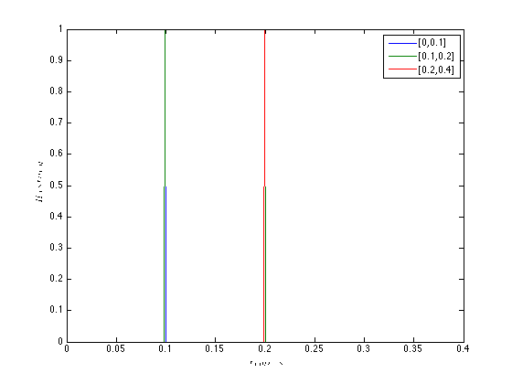
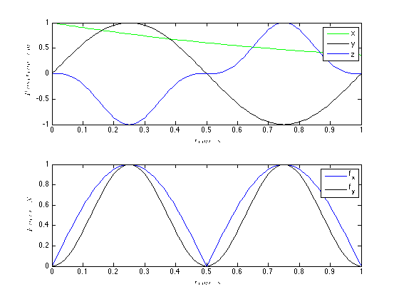
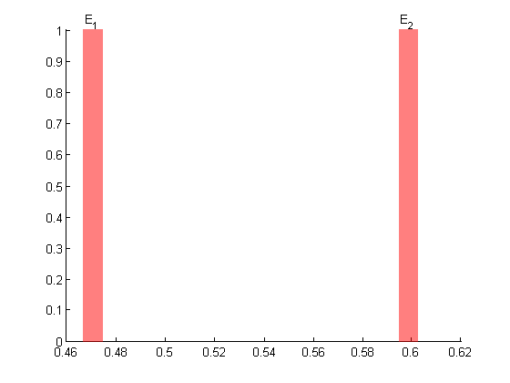
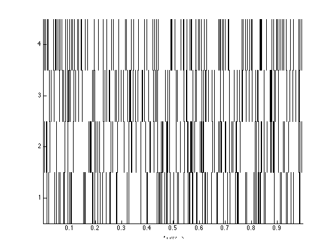
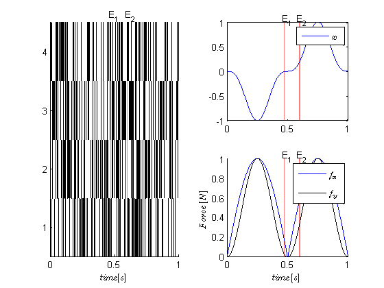
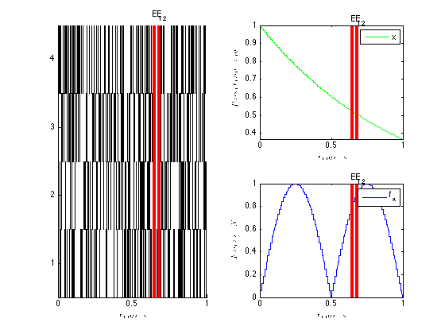

Test Trial
Contents
Example 1: A simple data set
close all;
lengthTrial=1;
Create History windows of interest
windowTimes = [.1 .2 .4]; h=History(windowTimes); figure; h.plot;
Load Covariates
load Covariates.mat; %load position and force covariates cc=CovColl({position,force}); cc.setMaxTime(lengthTrial); figure; cc.plot;
Create trial events
eTimes = sort(rand(1,2)*lengthTrial);
eLabels={'E_1','E_2'};
e=Events(eTimes,eLabels); %use default eventColor 'r'
figure; e.plot;
 Create neural Spike Train Data
clear nst; for i=1:4 spikeTimes = sort(rand(1,100))*lengthTrial; nst{i}=nspikeTrain(spikeTimes,'',.001); end spikeColl=nstColl(nst); %create a nstColl figure; spikeColl.plot;
Finally we have everything we need to create a Trial object.
trial1=Trial(spikeColl, cc, e, h);
figure; trial1.plot; % plot all the data;
 Mask out some of the data and plot the trial once again
trial1.setCovMask({{'Position','x'},{'Force','f_x'}})
figure; trial1.plot;
trial1.getHistForNeurons([1:2]);
 Example 2: Analyzing Trial Data
Examples of neural spike analysis using the Neural Spike Analysis Toolbox or using standard methods standard methods